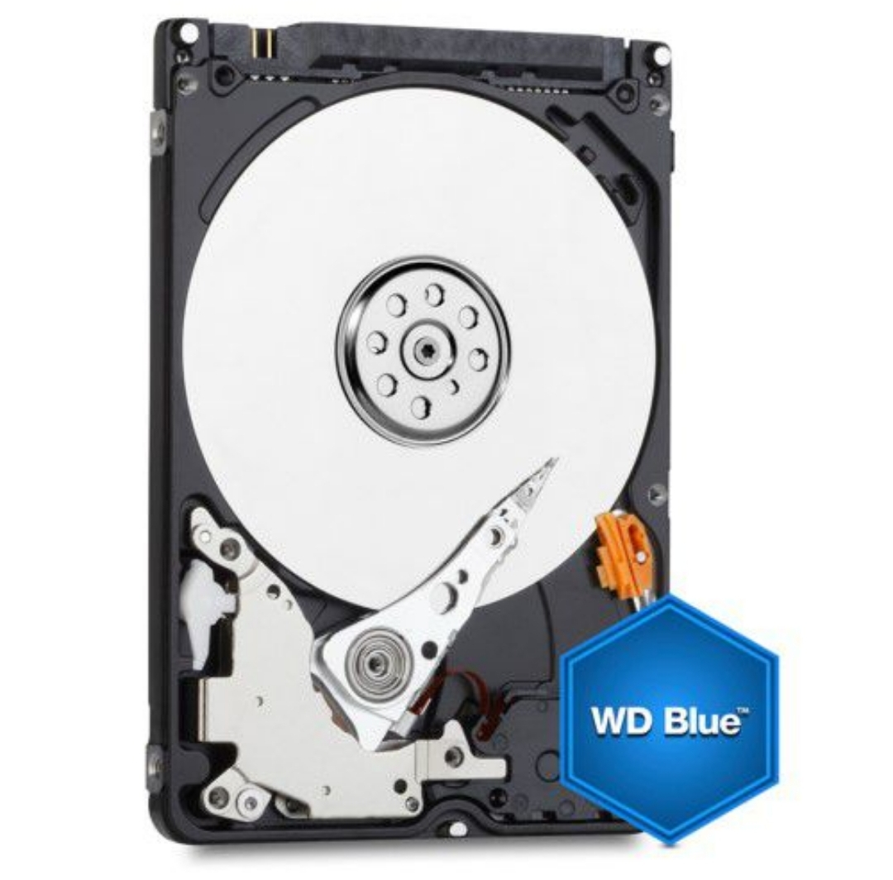
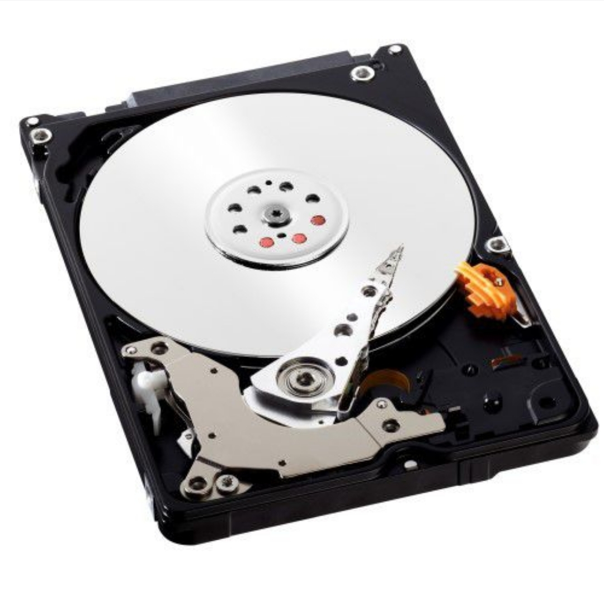

Specifications:
FOR EVERYDAY COMPUTING WHILE ON THE GO
Built to WD's high standards of quality and reliability, WD Blue mobile hard drives offer the features that are ideal for your everyday mobile computing needs
Recommended Use - WD Blue storage is tested and recommended for use in notebooks, external enclosures and certain industrial applications
A Modern Classic - Designed and manufactured with technology found in WD's original award-winning desktop and mobile hard drives
Easy Backup and Upgrade - Acronis True Image WD Edition software, available as a free download, can clone drives and backup your operating system, applications, settings and all of your data
TECHNICAL SPECIFICATIONS:
WD Blue mobile hard drives are designed for laptops and mobile applications
Warranty: 2 Years
Interface: SATA3 6.0Gbps NAS HDD
RPM: 5400RPM Spindle Speed
Cache: 16MB
Form Factor: 2.5"
1 x ASUS TUF Gaming A15 Notebook
1 x User Manual
Capacity: 1TB
Model: WD10SPZX
150MB/s Host to/from
What's in the box
1 x WD Blue 1TB 2.5 inch Hard Drive
| Catagory | Computers & Tablets / Drives & Storage / Internal HDD |
|---|---|
| Brand | Western Digital |
| Warranty | 6 months |
| Cache | 125Mb |
| Hard Drive Type | Hard Disk Drive(HDD) |
| Rotational Speed | 5400 rpm |
| Device Storage Capacity | 1000GB |
| Barcode | 718037845319 |